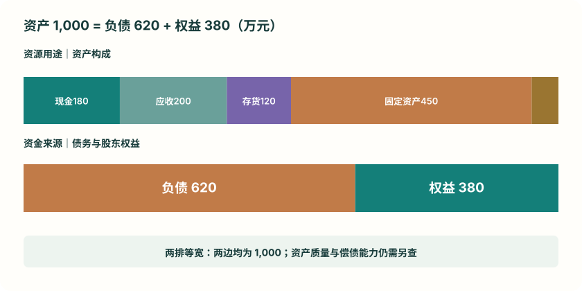
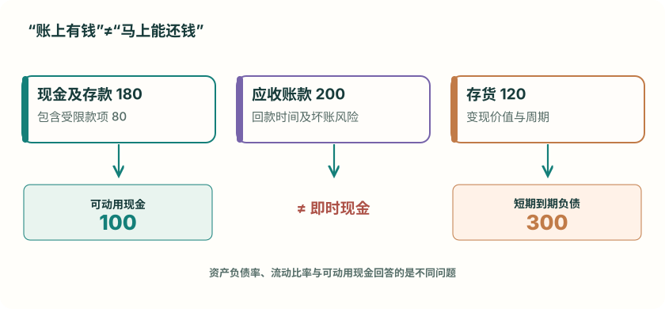

资产负债表：资源、融资与流动性
账面资产很大，为何公司依旧可能难以偿债？关键在于分清资产的价值、变现速度以及债务到期的时点。
财务位置是一张有约束的地图
资产负债表是在一个特定报告日对企业所控制的经济资源、承担的义务和权益剩余作出的结构化呈现。它必须满足资产 = 负债 + 所有者权益，但恒等式成立不等于经营安全，更不意味着资产可以按账面金额立刻出售。分析资产要问控制权、可回收金额和变现时间；分析负债要问到期时间、担保、契约限制以及利息压力。
举一个完整且可复算的例子：企业拥有现金 180、应收 200、存货 120、固定资产 450、其他非流动资产 50（均为万元），合计 1,000；其负债 620、权益 380。以下图形等宽，保证“用途”和“来源”两种视角的总量一致。

资产端：按回收机制逐项拆开
货币资金首先关注银行存款与受限资金；现金高而短期借款也高时，要核查受限保证金、质押、异地账户等附注。应收账款关注账龄、集中度、预期信用损失与期后回款；余额增长快于收入是需要解释的现象，并不自动意味着信用恶化。存货则需要比较周转天数、跌价准备、品类结构和生产周期。
固定资产通常对应长期产能投入，可通过折旧年限、减值及资本开支判断账面价值能否转化为未来经营收益。无形资产、商誉并非一律“虚资产”：核心问题是相关现金产生单元的未来收益能否覆盖账面金额，特别需要关注减值测试中的假设。
流动资产并非简单等于“12 个月内可卖掉的资产”。分类还可能依赖企业正常营业周期、交易目的和现金等价物的限制条件，具体以适用会计准则及其版本为准。
流动性不是资产负债率的另一种说法
沿用这个教学案例，假设流动资产是现金 180、应收 200、存货 120，合计 500；流动负债 300。则流动比率为 500/300 ≈ 1.67。可是现金 180 中有 80 被限制使用，立刻可动用的现金只有 100。应收和存货仍需回款或销售，不应该与即期支付能力混为一谈。

流动比率、速动比率与现金短债比来自不同层次：前两者用不同的流动资产集合，后者要求明确“现金是否受限”和“短债的具体定义”。它们都不能替代债务到期明细或现金流预测，也不存在适用于所有行业的单一安全阈值。
负债端：到期结构比简单标签重要
债务中应区分银行借款、债券、租赁负债等有息融资与应付账款、合同负债等经营性负债。经营负债也可能在供应商收紧账期时形成强烈的流动性压力，因此“无息”不等于“无风险”。从长期偿债角度，还要检查资产与现金流能否支持利息、租赁和本金偿付。
| 科目 | 先问什么 | 优先查看 |
|---|---|---|
| 短期借款 | 何时到期、如何续借？ | 附注借款分类、期限、抵质押 |
| 合同负债 | 收到款后还需完成什么履约？ | 合同、履约义务与退回条件 |
| 长期借款 | 契约、利率及未来分期还款？ | 债务到期表与约束条款 |
| 所有者权益 | 累计利润、资本注入及其他权益变动？ | 权益变动表与归母/少数股东口径 |
对于合并报表，权益可能包含归属于母公司所有者权益和少数股东权益；归母利润与归母权益搭配计算比率时，应维持一致口径。
算一算：杠杆和股东剩余权益
调整公司资产总额及负债总额，观察同一恒等式下权益金额与资产负债率变化。负权益或极端杠杆应触发进一步调查，但单看比例无法直接判断企业价值或违约概率。
动手调整数字
修改输入观察对应关系；这是刻意简化的教学算例，不自动覆盖税金、特殊合同安排或其他现金流调整。
分析顺序与反例
顺序建议是：先确认合并范围及币种，再列出现金及受限款、到期债务、应收周转、存货跌价与长期资产减值；最后结合经营现金流核实可持续性。只有时间序列和同业对比同时存在，许多表面“异常”才有解释意义。
自测：资产 1,000、负债 620，权益和资产负债率各是多少？
权益为 380 万元；资产负债率为 620/1,000 = 62%。但现金可动用金额和短债到期日仍是不同问题。
本章结论：资产负债表是对资源约束的刻画，不是企业“值多少钱”的估价单。
官方资料与适用范围
以上示例数据均为教学虚构。法规与会计准则可能按年度修订，实际分析时应以公司报告期间适用版本为准。